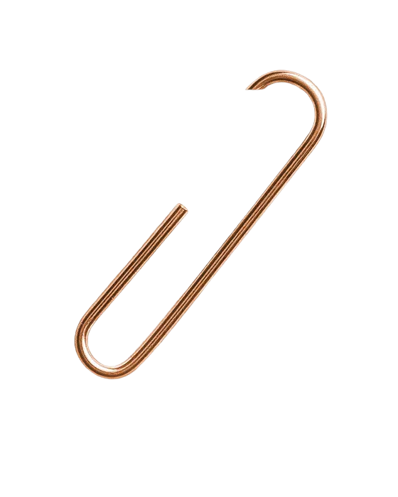
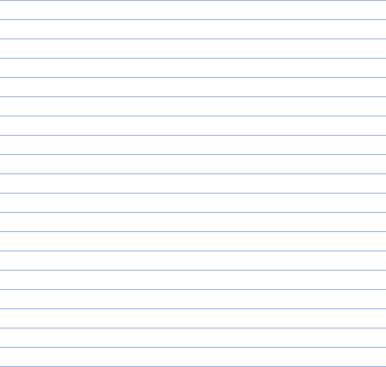
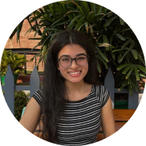
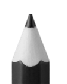

[ Nov XX - Nov XX ]
[ 2026 ]


Have a question?
Please contact your researchers here:
Hi 👋 We are Medhavi and Vanshika

Thank you for participating in our study.
Please enter your access code to get started.
Please enter your access code to login
Medhavi and Vanshika will be notified, and you’ll receive an email for a paired interview in the following week!
Annotate your Image
